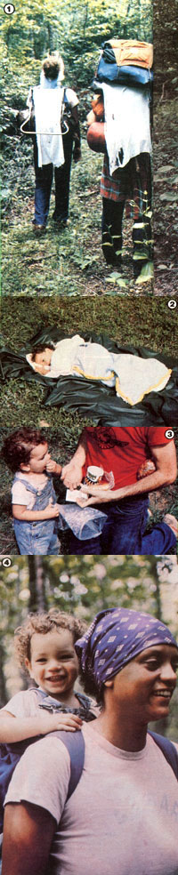

[1] While one set of diapers dries en route, Nate gaily balance histreasured tiger cup on Becky's head. [2] ""The Bug"" pretends to nap in the sleep sack his mother made from three light blankets and a sheet. [3] Munching food (such as raisins, dried apples, and crackers), a special cup, and an extra-special picture book helped make our son a contented backpacker. [4] The Royal Camel-Rider in all his glory.